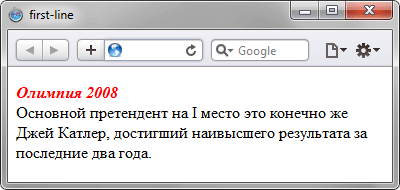

Псевдоэлемент ::first-line
Псевдоэлемент ::first-line задает стиль первой строки форматированного текста. Длина этой строки зависит от многих факторов, таких как используемый шрифт, размер окна браузера, ширина блока, языка и т.д. В правилах стиля допустимо использовать только свойства, относящиеся к шрифту, изменению цвета текста и фона.
Синтаксис
| CSS2.1 | |
| CSS3 | |
В CSS3 псевдоэлементы обозначаются с двумя двоеточиями, чтобы синтаксис отличался от псевдоклассов.
Пример
<!DOCTYPE html>
<html>
<head>
<meta charset="utf-8">
<title>first-line</title>
<style>
p::first-line {
color: red; /* Красный цвет текста */
font-style: italic; /* Курсивное начертание */
font-weight: bold; /* Жирное начертание */
}
</style>
</head>
<body>
<p>Олимпия 2008<br />
Основной претендент на I место это конечно же Джей Катлер, достигший наивысшего
результата за последние два года.</p>
</body>
</html>Результат примера показан на рис. 1. В данном примере первая строка, выделенная с помощью тега <br>, изменяет свой вид за счет начертания и цвета.

Рис. 1. Результат использования псевдоэлемента ::first-line
Спецификация
| Спецификация | Статус |
|---|---|
| CSS Pseudo-Elements Level 4 | Рабочий проект |
| CSS Text Decoration Level 3 | Возможная рекомендация |
| Selectors Level 3 | Рекомендация |
| CSS Level 2 (Revision 1) | Рекомендация |
| CSS Level 1 | Рекомендация |
Браузеры
| Internet Explorer | Chrome | Opera | Safari | Firefox | |
| :first-line | 5.5 | 1 | 3.5 | 1 | 1 |
| ::first-line | 9 | 1 | 7 | 1 | 1 |
| Android | Firefox Mobile | Opera Mobile | Safari Mobile | |
| :first-line | 1 | 1 | 4 | 1 |
| ::first-line | 1 | 1 | 7 | 1 |